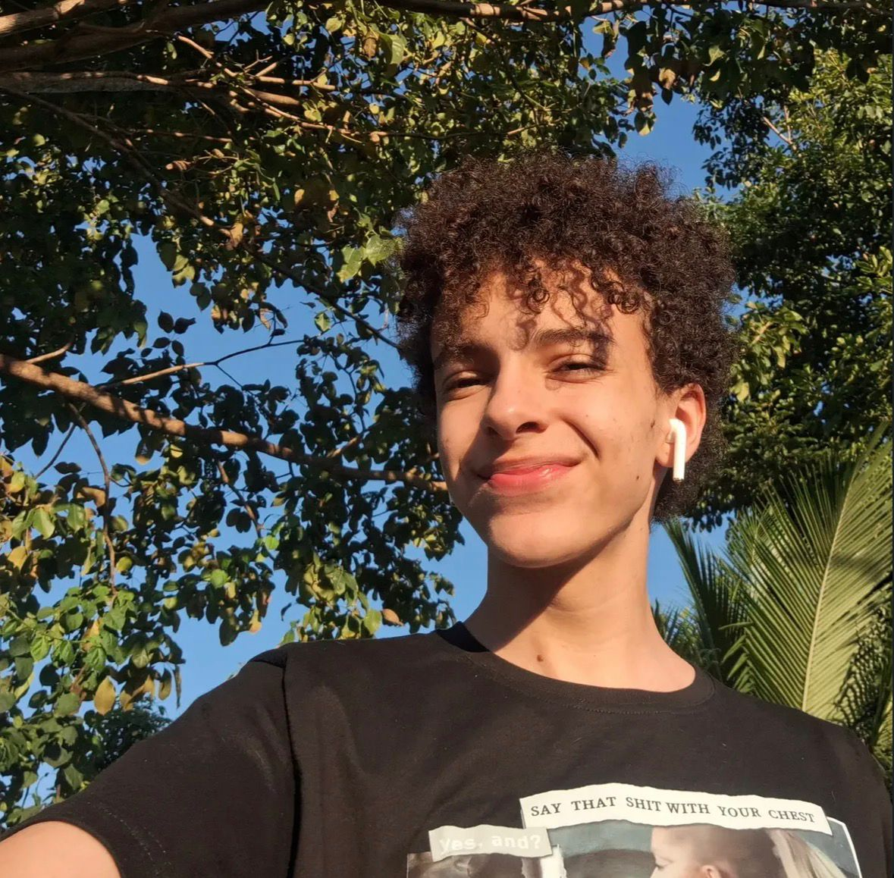

Antônio Duarte
Estudante de Ciência de Dados e Inteligência Artificial na UFPB
Atualmente Estudando Front-end :)



Estudante de Ciência de Dados e Inteligência Artificial na UFPB
Atualmente Estudando Front-end :)
Olá! Eu sou Antônio Duarte, originalmente do Acre, cursando CDIA na
UFPB :)
Busco sempre criar soluções funcionais e intuitivas. Tenho facilidade
de aprendizado em programação, sendo flexivel e aprendendo novas
linguagens rápido.
Minhas Linguagens de Programação:
JavaScript, Python,
PHP
Tecnologias:
HTML, CSS, React, Node.js, Prisma, MongoDB, MySQL
Outros:
Atendimento ao Público, Marketing, Comunicação, AudioVisual, Teatro, Ingles B2